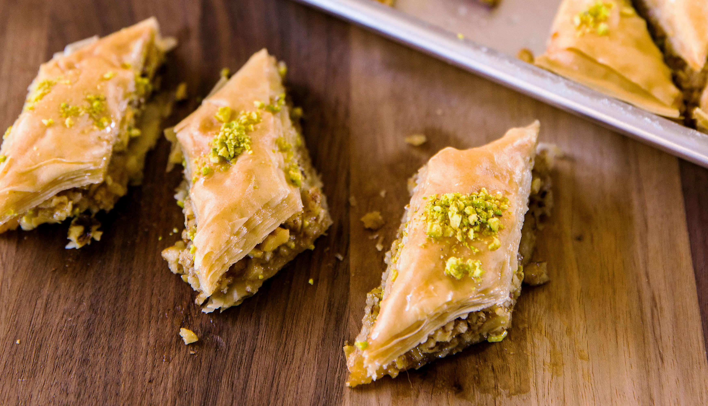

Syrian Baklava

Recipe History
Baklava is one of the most popular Middle-Eastern desserts. Its origin is
widely debated where different countries prepare it differently. This is the
recipe from the Levantine cuisine, specifically Syria.
Recipe Information
- Type:Desserts
- Author: Noor Al
Mousa
- Time:3 hrs
- Yields:60
servings
Ingredients
- 2 cups granulated sugar
- 1 tsp lemon juice
- 3 tsp orange blossom water
- ¾ cup superfine or baker's sugar
- 6 cups (1 lb., 10 oz.) chopped walnuts (pulse in a food processor for a
mix of fine and somewhat coarse pieces)
- 1 ¼ cups homemade or store-bought clarified butter (ghee or samneh), warmed until liquefied
- 26 sheets filo dough (12 by 17 in., about 1 1/3 lbs.), thawed if frozen
- 2 tbsp minced, lightly toasted pistachios
Directions
Make Syrup
- In a medium saucepan over medium heat, bring granulated sugar and 1 cup
water to a boil, stirring occasionally.
- Add lemon juice, It helps prevent crystallization.
- Reduce heat to an active simmer and cook, stirring occasionally, until
slightly thickened and reduced to a scant 1 3/4 cups, 10 to 12 minutes.
- Remove from heat, stir in 1 tsp. orange blossom water, and let syrup cool.
Preheat oven to 350° Fahrenheit in preparation to bake.
Make Filling
- In a large bowl, combine superfine sugar, remaining 2 tsp. orange blossom water, and 1/3 cup syrup.
- Add walnuts and stir until well blended.
- Set remaining syrup aside.
- Brush a rimmed baking sheet with a bit of the butter.
Putting together Dough and Filling
- Unroll filo. As you work, Keep it covered with a kitchen towel if you feel it's drying.
- Lay 1 sheet filo in pan and brush generously with butter, making sure to cover all the dough.
- Repeat until you've used 14 sheets (any air bubbles that form will work their way out).
- Spoon filling over filo, spread evenly, and press mixture all over with back of spoon.
- Lay a sheet of filo on top and press it firmly with flat hands.
- Brush generously with butter, then repeat layering, pressing, and buttering with 5 more sheets.
- Layer and butter remaining 6 sheets, flattening them with your hands (no need to press).
- With a knife, trim shaggy filo edges flush with sides of pan (leave edges in pan for snacking later!).
- Using knife and a ruler, score filo at opposite long ends to mark 6
equal strips; then cut along score lines, using the ruler as a guide.
- Repeat on a diagonal, making 12 strips 1 1/2 in. wide to create diamonds.
Baking
- Bake in 350° Fahrenheit oven, rotating pan twice for even browning, until filo is deep golden
and crisp, including down into cuts, about 35 minutes.
- Using a soup spoon, evenly coat hot baklava with 1 to 1 1/4 cups of
reserved, room-temperature syrup. (How much syrup is a matter of taste)
- Note: If the baklava has cooled or the syrup is hot, it won't be crunchy, it will be soggy.
- Sprinkle center of each diamond with a generous pinch of
pistachios.
- Let baklava cool in pan on a rack at least 1 hour.
- Re-cut if needed before serving, and cut bigger pieces in half if you like.